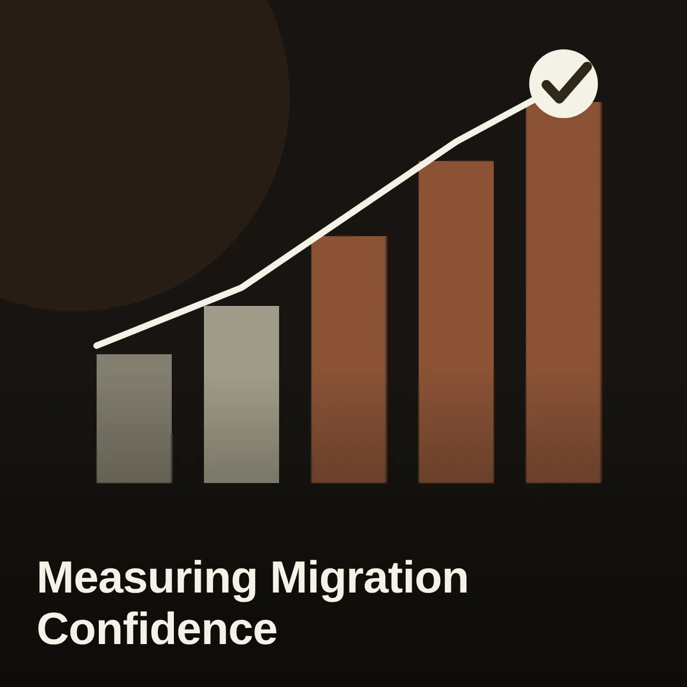
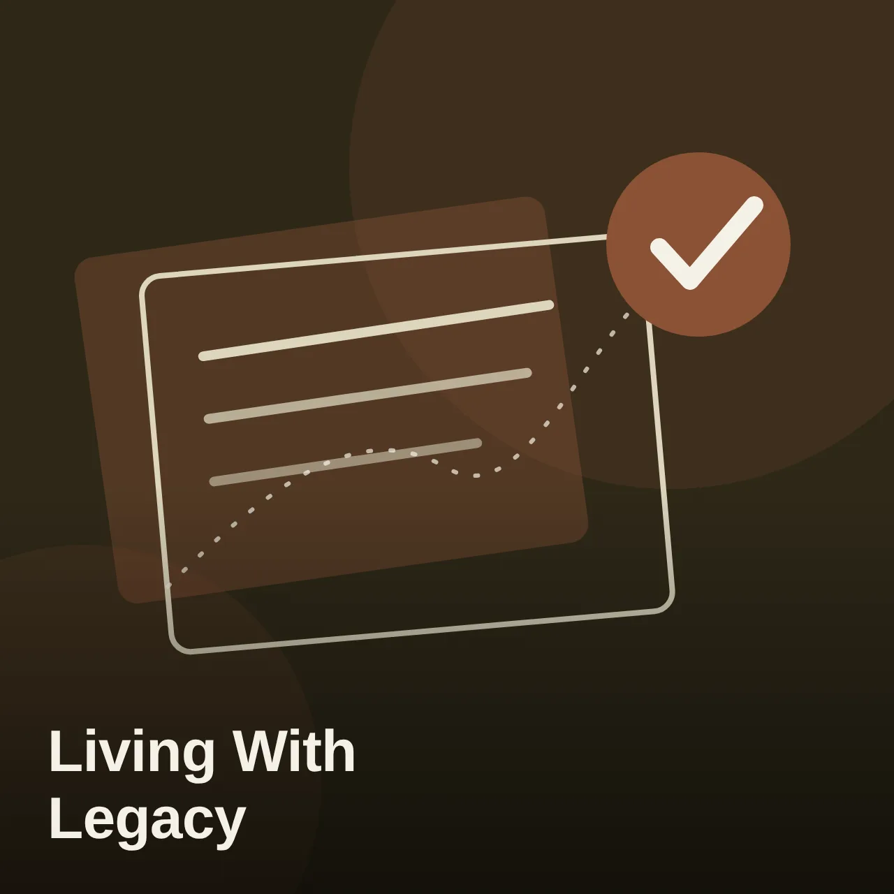
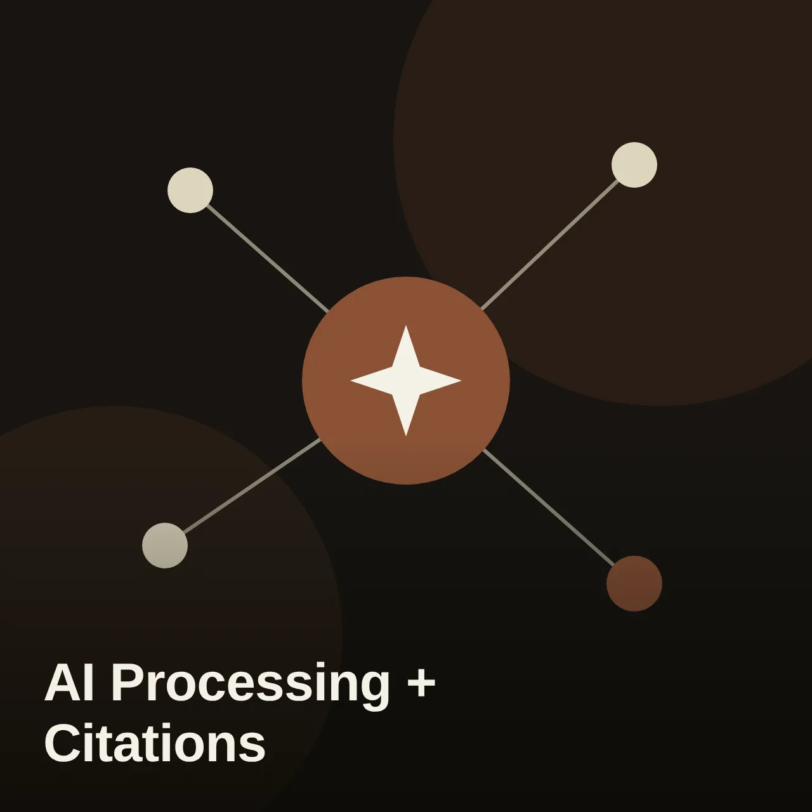
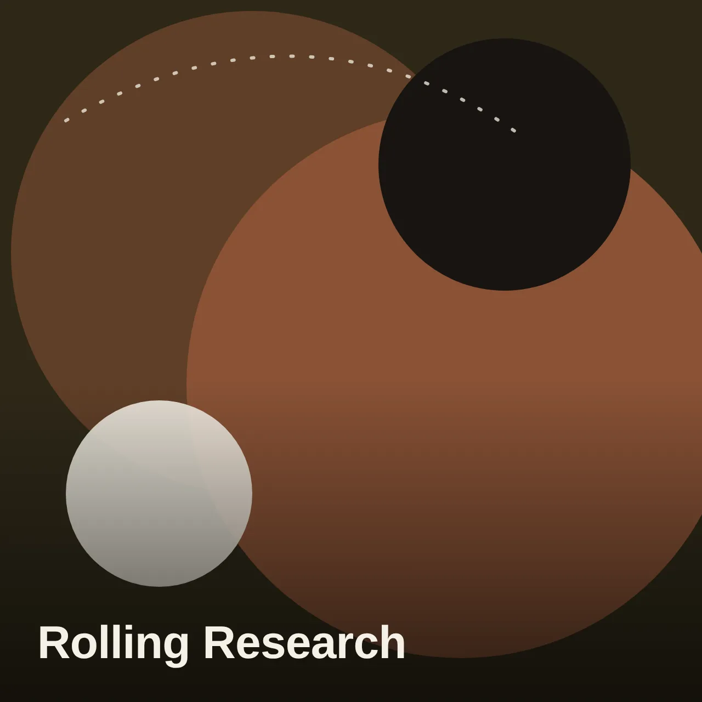
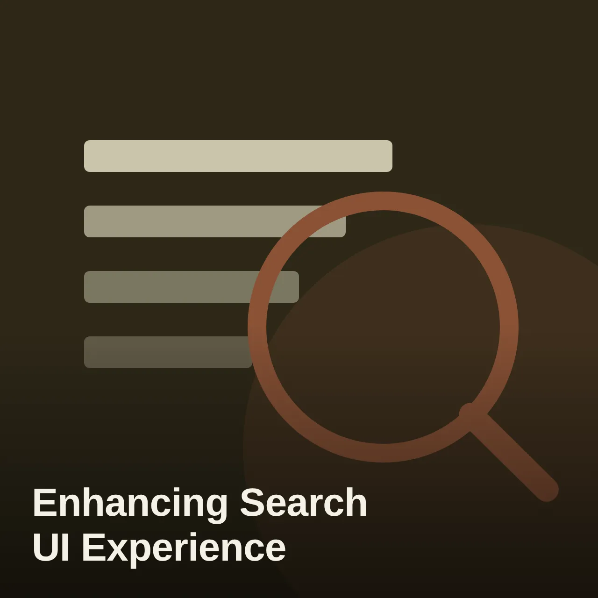
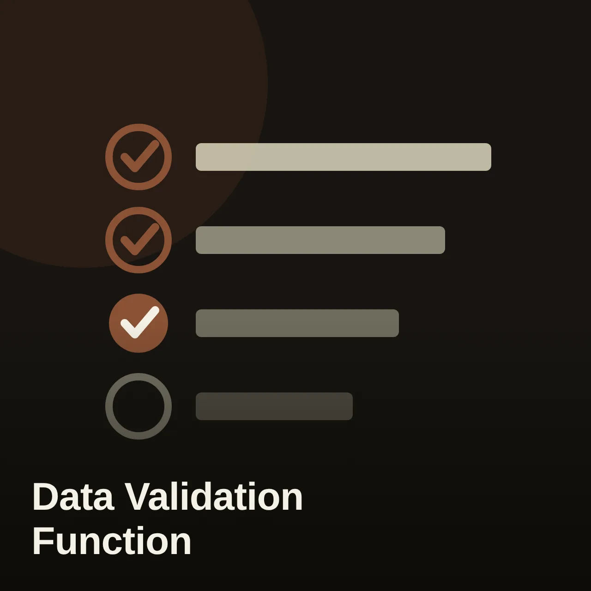

The Real Reason Customers Weren't Adopting AI (Hint: It Wasn't the Price Tag)
Leadership adopted a ranked "Adoption Contract" as binding roadmap gates, sequencing migration tooling ahead of new AI features.
View project
Sr. UX Researcher
Hello, I'm a Sr. UX Researcher with 5+ years of experience working in enterprise and B2B software.
I enjoy studying human behavior, and I have the ability to see the big, strategic picture while not losing sight of the nuts and bolts.
My background in psychology has taught me to be empathetic with users, my Business Psychology background has taught me how to map behavioral insights to business needs, and my Human Factors/Ergonomics background to advocate for the user. In practice, that shows up as a mixed-methods habit, surveys, contextual inquiry, card sorting, benchmarking, paired with an AI-assisted research workflow I built to move faster without cutting corners on rigor.
My superpower is overcoming any challenge in front of me, whether that's finding creative ways to recruit enterprise technical personas or managing stakeholder expectations.
Outside of work, I love trying new recipes, reading fiction, and always on the hunt for a new coffee spot!

Leadership adopted a ranked "Adoption Contract" as binding roadmap gates, sequencing migration tooling ahead of new AI features.
View project
Reframed the roadmap around ease-of-use, not migration pressure. Legacy usage fell from 86.3% to 81% and modern usage rose from 13.7% to 19% over the next two years.
View project
Findings shaped which AI Processing and Citation patterns shipped into the design system.
View project
Compressed a two-release-cycle research process into one, speeding time-to-market for shared roadmap features.
View project
To understand how Bulk Actions was currently being leveraged by end users.
View project
Goal of this study was to evaluate the usability, user experience, user responses, expectations and preferences for Data Validation.
View project
Do you have a product idea, want to discuss a project, or need a researcher? Drop me an email!
Thanks — your message is on its way. I'll get back to you soon!